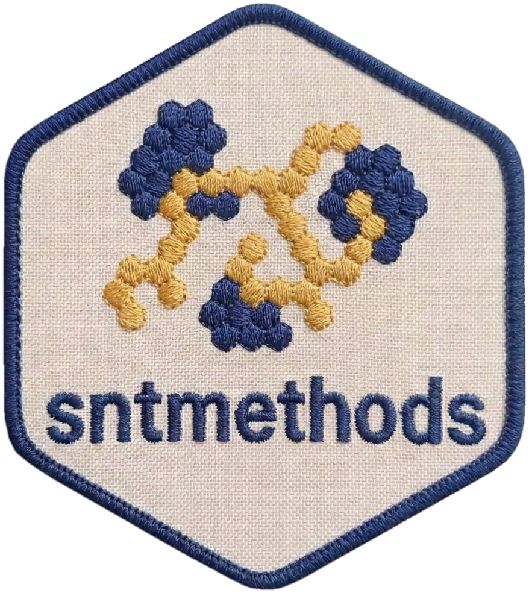

Calculate Gini Coefficient Using DHS Brown Formula Methodology
Source:R/indicator_wealth.R
calculate_dhs_gini.RdCalculates the Gini coefficient for wealth inequality following the DHS methodology. Uses the Brown formula with configurable number of wealth groups (default 100) to provide a standardized measure of inequality.
Arguments
- wealth_scores
Numeric vector of wealth index factor scores (hv271).
- weights
Numeric vector of survey sampling weights.
- population
Numeric vector of household population sizes (de jure members).
- n_groups
Integer specifying the number of wealth groups for calculation (default: 100, following DHS methodology).